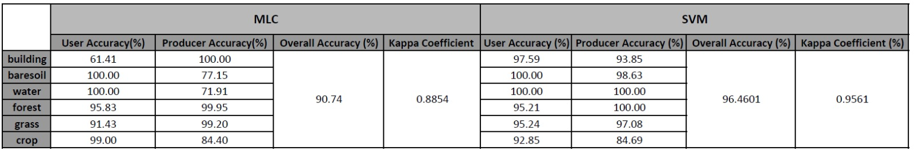

Uncertainty of the Product
The selection of training samples can cause uncertainty in classification. The input layer is 9, so at least 10 samples of ML classifier are enough. Also, the training samples should be distributed separately in feature space. In order to reduce the uncertainty resulted by training sample, some of the similar classes can be merged. In this case, the original classes ‘crop1’(rapeseed) and ‘crop2’ (maize) are combined into ‘crop’. the original classes ‘forest1’ (deciduous), ‘forest2’ (evergreen) and forest3 (heath) are combined into ‘forest’. The pair separation of the training samples can be a reference to the uncertainty. The relatively short distance occurs in crop and grass (1.9918), building and forest (1.9962) and grass and forest (1.9974).
Spectral resolution, radiometric resolution and spatial resolution can make a difference to the uncertainty. In this case 9 bands are used to make the classification, with the wavelength from 0.49μm to 2.19μm. The spatial resolution is from 10m to 20m.
Different settings of parameter in classification algorithm are also reasons of uncertainty. In maximum likelihood classification, selection of the threshold probability value can make a difference. And in support vector machine classification, selection of proper kernel function can make a difference. In this case, the threshold probability value of MLC is selected automatically by software and the selected kernel function is radial basis function.
The producer accuracy of each class can be used to visualize the uncertainty in a map.

Uncertainty map of maxium likelihood classification Uncertainty map of support vector machine classification
Assessment of Accuracy

With the reference sample, confusion matrix can be generated to represent the accuracy of classification. The overall accuracy and kappa coefficient of MLC are 90.9330% and 0.8878, and for SVM is 96.4601% and 0.9561. Both of them show the high accuracy in classification, and the quality of SVM is better.
According to each class, the user accuracy of building in MLC is low, with the value of 61.41%, which is 97.9% in SVM. It means that other kinds of objects are likely to be classified into building with the algorithm of MLC, especially for the baresoil and water. And the producer accuracy of baresoil and crop with MLC are 71.91% and 77.15%. Some of the baresoil are classified into building, and some crop are classified into grass.
Comparison of the Classified Image with Exsiting Geo-information
The classified image can be compared with OpenStreetMap, which includes the landcover information of this area. The OpenStreetMap shows a river in the north-west of city, while in MLC image it has been classified into building. Another problem is the road is not classified because of the selection of training sample.
In order to evaluate the quality of the classification product, we can refer to the official document of Sentinel-2 L2A data quality report, which indicates that overall accuracy for 14 classification products generated by sentienl-2 image reaches 81.1±14.1%. The overall accuracy of our product (90.93% and 96.46%) is higher than the average level.